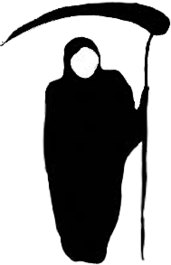
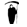

you are not logged in
Th
e
Grim Tw
ee
p
e
r
a fun, easy way to clean up your follow list.
login below to get started.

we don't spam and never will
1. SEE A TWEEP
To start, we'll show you one person that you're following on Twitter.
2.  KILL OR KEEP
You get to decide whether to keep following them or to unfollow them.
3. RINSE AND REPEAT
Keep doing this until you're only following people that matter to you.
<p>Your browser does not support iframes.</p>